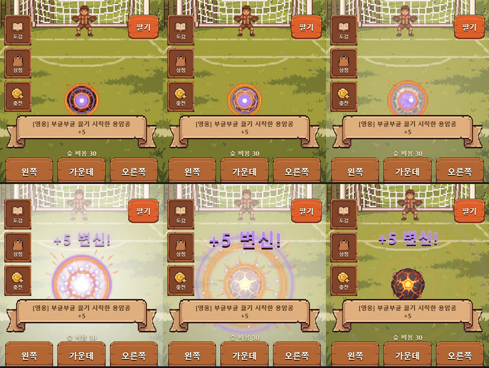
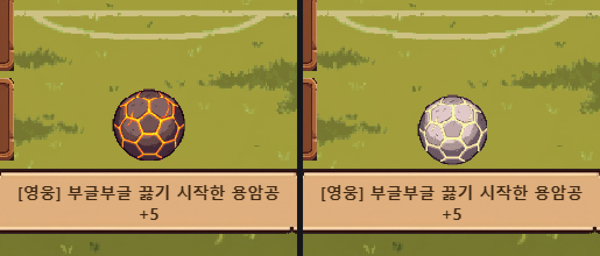
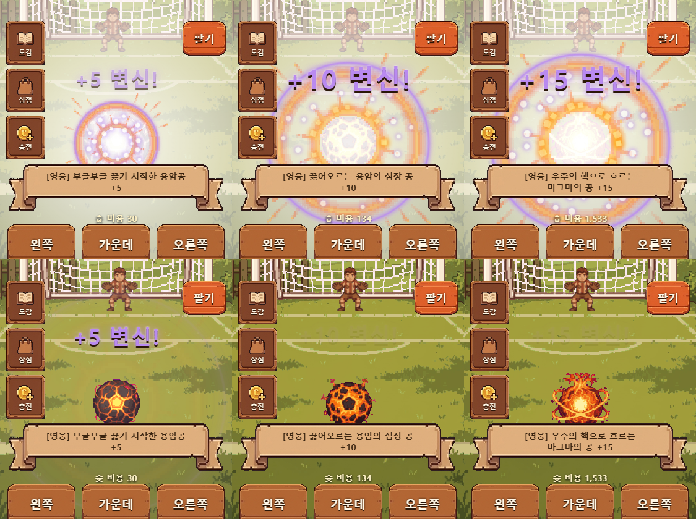

실제 게임 화면에서 연출을 20~60배 느리게 돌려 정해진 시각마다 정지시켜 찍은 프레임입니다. 용암공 기준이고 다른 종류도 같은 연출입니다. 시안 갤러리
이전 공이 용암색으로 달아오르며 충전 → 하얗게 번쩍하며 교체 → 새 본체가 크게 튀어나옴 → 폭발과 "+5 변신!" 글자 → 안정.


왼쪽부터 +5, +10, +15. 구간이 높을수록 충격파와 불꽃이 더 크고 많습니다.

http://127.0.0.1:5173/#demo=hero_2_4&win=1 용암공 +4 에서 시작, 다음 슛은 항상 골 → +5 변신#demo=hero_2_9&win=1 용암공 +9 → +10 변신, #demo=hero_2_14&win=1 +14 → +15 변신등급_종류번호_단계 로 바꾸면 됩니다. 예: #demo=legend_0_9&win=1 (우주공), #demo=rare_2_4&win=1 (불꽃공), #demo=myth_1_14&win=1 (시간의 공)&slow=20 을 붙이면 20배 느리게 볼 수 있습니다. 링크를 연 뒤 주소만 바꾸면 반영되지 않으니 새로고침하세요. 데모는 저장 데이터를 바꾸지 않습니다.